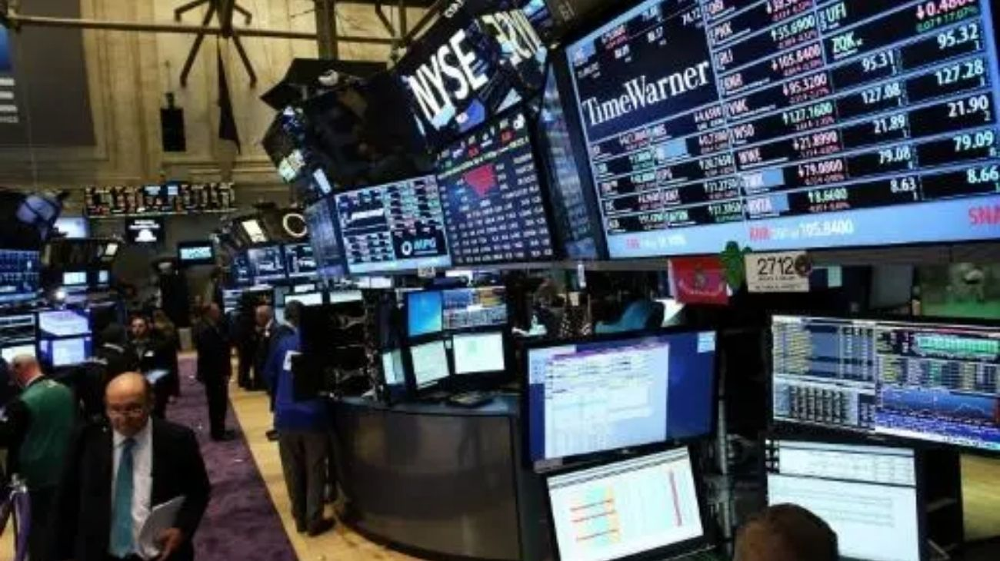

Nuevos CEDEARs de ETFs llegan al mercado argentino: ¿cuál conviene para diversificar tu cartera?
La CNV habilitó cuatro nuevos CEDEARs de ETFs internacionales que permiten a los inversores argentinos acceder al S&P 500 igualitario, minería, energías limpias y la economía coreana desde el mercado local.

El mercado de capitales argentino suma nuevas herramientas para el inversor minorista. Cuatro ETFs internacionales de primer nivel ahora cotizan en formato CEDEAR en las bolsas locales, ampliando significativamente las opciones de diversificación disponibles en pesos y dólares MEP sin necesidad de operar en el exterior. Los nuevos instrumentos son el Invesco S&P 500 Equal Weight ETF (RSP), el iShares MSCI South Korea ETF (EWY), el SPDR S&P Metals & Mining ETF (XME) y el iShares Global Clean Energy ETF (ICLN), y cada uno responde a una lógica de inversión bien diferenciada.
El RSP es quizás el más llamativo para quienes ya tienen exposición al S&P 500 a través de SPY o IVV. A diferencia de esos fondos, donde Apple, Microsoft y Nvidia concentran una porción desproporcionada del índice, el RSP otorga el mismo peso a cada una de las 500 empresas del índice. Esto reduce la dependencia de la performance de la Big Tech y expone al inversor en mayor medida a sectores como consumo, salud e industria. Históricamente, en períodos de rotación sectorial o caída de valuaciones tecnológicas, el RSP tiende a tener un comportamiento más estable que sus pares de ponderación por capitalización.
El EWY abre la puerta a Corea del Sur, una economía desarrollada con un perfil exportador tecnológico y manufacturero muy particular. Sus principales posiciones incluyen gigantes como Samsung Electronics, SK Hynix e Hyundai, empresas con presencia global en semiconductores, automotriz y química. Para el inversor argentino que ya tiene posición en ETFs de EE.UU., sumar EWY implica diversificar geográficamente hacia Asia sin asumir el riesgo de mercados emergentes más volátiles como China o India. El XME, por su parte, es una apuesta directa al ciclo de commodities: sigue empresas de metales y minería listadas en EE.UU., con exposición a acero, carbón, cobre y aluminio, y funciona como cobertura natural ante escenarios de inflación global persistente o auge de inversión en infraestructura.
Finalmente, el ICLN representa una apuesta estructural de largo plazo a la transición energética global. Invierte en compañías de energías renovables de todo el mundo —solar, eólica, hidrógeno e hidroeléctrica— y es especialmente relevante en un contexto donde los gobiernos del G7 y la Unión Europea mantienen compromisos de descarbonización con horizontes de inversión que se miden en décadas. Para el inversor argentino, estos cuatro nuevos CEDEARs representan una oportunidad concreta de construir carteras más diversificadas, con cobertura cambiaria implícita, sin salir del mercado local.